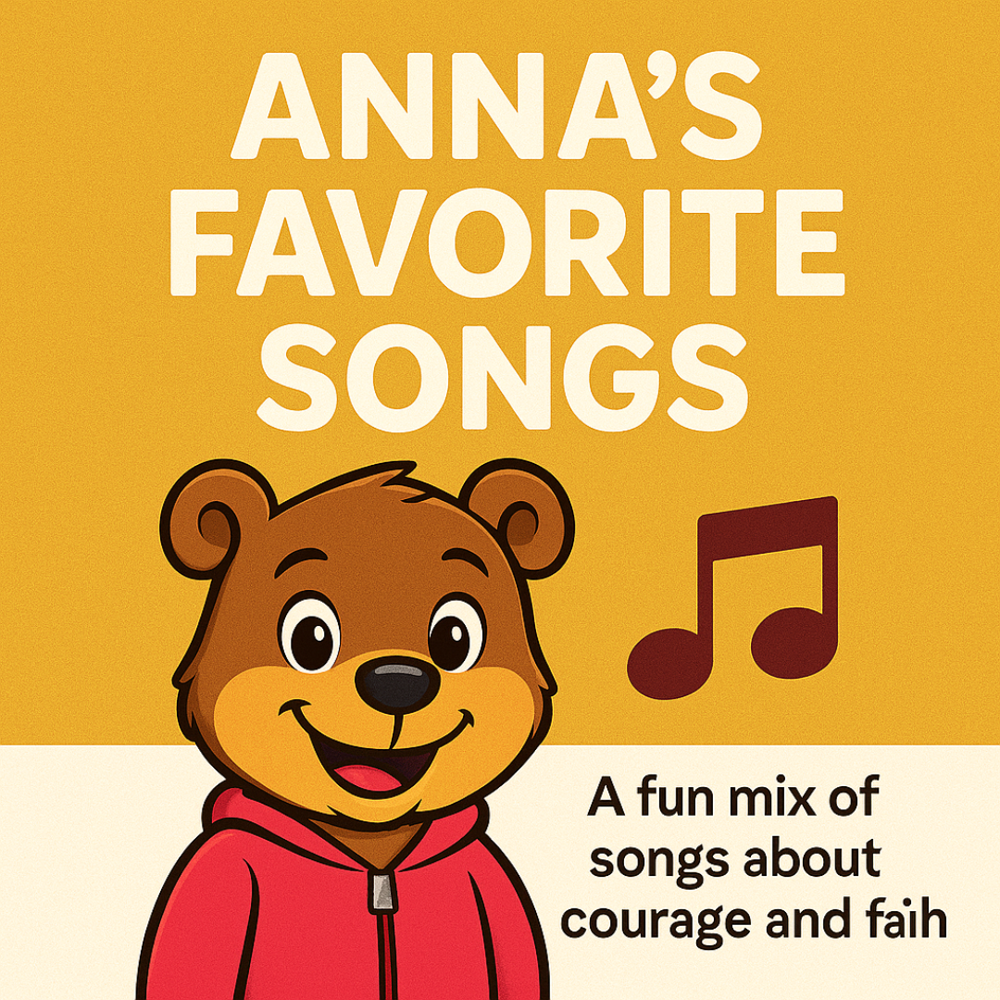

Courage Quiz
Discover your bravery style! Take Anna’s quiz and find out what kind of courage hero you are.
Take the Quiz
Anna Courage T-Shirt
Wear your faith with courage! This bold tee features Anna the Bear from The Faith Hero Network — perfect for kids and families.
Buy Now
Anna’s Favorite Bible Verses
A collection of encouraging scriptures Anna turns to when she needs courage. Includes reflections and a Ko-fi download link.
Read the Verses

Anna’s Favorite Songs
A Spotify playlist full of courage-building, faith-filled songs Anna loves to listen to.
Listen Now
Anna’s Favorite Books
A curated reading list of courage-filled, faith-friendly books for kids and tweens.
View Reading List